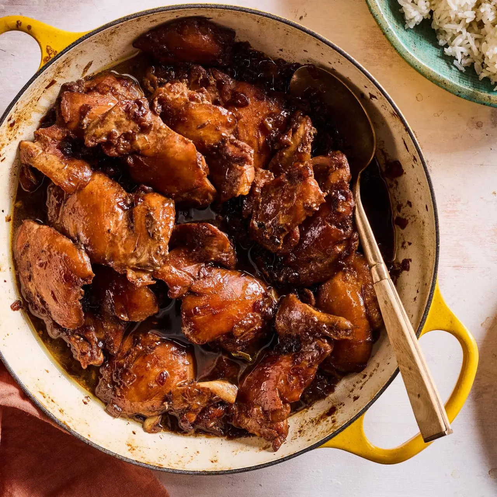

lunch
meryenda
dinner

Nilagang Baboy
Nilagang Baboy is a Filipino pork soup made by simmering pork (typically ribs or shoulder) with a variety of vegetables like corn, potatoes, and leafy greens in a clear, savory broth, offering a light yet flavorful dish.


Adobo
Adobo is a quintessential Filipino dish made by marinating meat (usually chicken or pork) in a mixture of soy sauce, vinegar, garlic, bay leaves, and peppercorns, then simmering it until tender, creating a rich, tangy, and savory flavor.
Sinigang
Sinigang is a popular Filipino sour soup made with a variety of meats (such as pork, shrimp, or fish) and vegetables, simmered in a tangy broth flavored with tamarind, giving it a refreshing and savory taste.